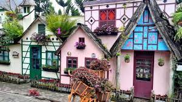
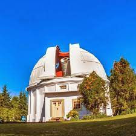

sejarah
kota bandung berasal dari kota bandung atau bendungan karena terbendungnya sungai citarum oleh lava gunung
tangkupan perahu yang lalu membentuk telaga. lagenda yang diceritakan oleh orang tua belanda bahwa bandung
di ambil dari sebuah kendaraan air yang terdiri dari dua perahu yang diikat berdampingan yang disebut bandung
yang digunakan oleh bupati bandung, R.A Wiratakasumah II, untuk melayani ci tarum dalam mencari tempat kedudukan
yang baru untuk menggantikan ibu kota yang lama di dayeuh kolot
berdasarkan filosofi sunda, kata bandung juga berasal dari kata Nga-bandung-an banda Indung, yang merupakan kalimat
sakral dan luhur karena mengandung nilai ajaran sunda. Nga-bandung-an berarti menyaksikan atau bersaksi. banda
adalah segala sesuatu yang berada di alam hidup yaitu di bumi dan atmosfer, baik makhluk hidup maupu benda mati.
sinonim dari banda adalah harta. indung berarti ibu atau bumi,
disebut juga ibu pertiwi tempat banda berada
\
geografis
bandung dikelilingi oleh pegunungan, sehingga bentuk morfologi wilayahnya, bagaikan sebuah mangkok raksasa,
secara geologis kota ini terletak di tengah provinsi jawa barat, serta berada di ketinggian ±768 m
di atas permukaan laut dan sebelah selatan merupakan wilayah renadah
dengan ketinggian 675 m di atas permukaan laut
bandung dialiri 2 sungai utama, yaitu sungai cikapundung san sungai citarum beserta anak anak sungainya yang
secara umum mengalir ke arah selatan dan bertemu sungai citarum. dengan kondisi yang demikian, bandung selatan sangat
rentan dengan masalah banjir terutama pada musim hujan
wisata
sejak dibukanya jalan tol cipularang, bandung telah menjadi tujuan utama dalam menikmati liburan akhir pekan terutama
dari masyarakat yeng berasal dari jakarta sekitarnya. selain menjadi kota wisata belanja, kota bandung juga dikenal
dengan sejumlah besar bangunan lama beraksitektur bangunan lama
farm house lembang

berada di jalur utama bandung-lembang. farm house menjadi tempat wisata yang tak pernah sepi pengunjung
selain kerena letaknya srategis, kawasan ini juga menghadirkan nuansa wisata khas eropa. semua itu diterapkan
dalam bentuk spot swapoto instragamable
observasium bosscha

memiliki beberapa teleskop, antara lain refaktor ganda zeiss, schmidt bimasakti, refraktor bamberg
, cassegrain GOTTO dan teleskop surya. refraktor ganda zeiss merupakan jenis teleskop terbesar untuk
meneropong bintang, benda ini diletakkan pada atap kubah saat teropong digunakan atap itu harus dibuka.
observasium bosscha boleh dikunjungi oleh siapapun, tanpa tiket. namun, bagi yang ingin menggunakan
teleskop zeiss harus mendaftarkan diri. untuk intansti atau lembaga pendidikan, diberikan jadwal hari
selasa sampai jumat. sementara itu kunjungan individu dibuka setiap hari sabtu.